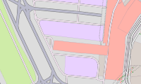
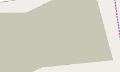
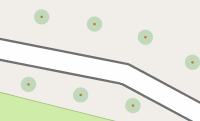
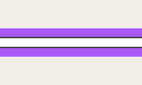

This legend describes the Freizeitkarte with the theme freizeitkarte.
Style:
The theme contains one style "Freizeitkarte".
With the options, the map can be adapted to your own needs.

Areas:
 |
Background of map |  |
Residential area |
| Business, Mall or area with predominant retail shops | Administration, offices | ||
 |
Industrial area or industrial estate, predominantly workshops, factories or warehouses; area used for rails, railway property |  |
Square or street only for pedestrians, e.g. pedestrian precinct or shopping arcade |
 |
Farm, agriculturally used area with residential buildings, shelters, stables, garages, silos etc. | Farmland | |
| Camp ground, site for campers |  |
Parking lot (public) | |
 |
Parking lot (limited, eg. for customers) |  |
Parking lot (private) |
 |
Bicycle Parking | General buildings | |
 |
School, college, university ( campus or building) Public buildings |
 |
Hospital |
 |
Church |  |
Sports facility, sports hall |
| Roof (transparent) | Greenhouse | ||
 |
Ruin |  | Areoport, Apron, Gate |
| Prison |  |
Power station, used for producing electricity or warmth, transformer station | |
| Dump, disposal site | Greenfield, land intended for turn into a construction site | ||
|  | Construction site (but also fallow) | Mining above ground, quarry, pit (gravel, clay, ...), open-cast mining | |
 |
Area used by military, barracks, military training area, etc. danger area, prohibited area |  |
Nature reserve |
| Nature reserve with entry ban | Forest, commercial forest; distinguished between mixed, deciduous or coniferous forest | ||
 |
Natural wood, woodland with no forestry ; distinguished between mixed, deciduous or coniferous forest | Graveyarddistinguished between religions | |
 |
Sports complex, stadium |  |
Playing field, track |
 |
Riding area | Zoo also leisure park, theme park, museum | |
| Garden plot, allotment | Park, green space, dog park | ||
 |
Playground for children |  |
Golf course |
 |
Driving Range (Golf) |  |
Meadow, green areas |
 |
Heath |  |
Uncultivated land, undergrowth, bush |
 |
Ground covered with sand, none or sparse vegetation | Vineyard | |
| Orchard, fruit plantation, cultivated area with trees or bushes for food production | Water in general, sea, lake, pond, river, dam lake etc. | ||
| Retention basins | Marina, moorings for yachts and motor boats | ||
 |
Beach |  |
Gravel beach |
| Glacier, area coverd with ice all year round; or ice rink | Rock | ||
 |
Scree | Mountain pasture, alpine meadow, area above tree line | |
| Wetland meadow, also saltmarsh |  |
Reeds, bulrushes | |
 |
(non-woody) Swamp |  |
Bog, fen |
| Slit, mud | Saline | ||
| Tidalflat |  |
Reef |
Note:
- Cultivated land (farmland) is in many countries the most frequently occurring area (in Germany it is 33%).
- Forest covers a significant area of many countries (in Germany it is 30%) and therefore is good for rough orientation.
- (Lattice) hatching is for areas with access restrictions (mil. area, construction sites, power plants, allotments, private parking, ...) used.
Roads and Paths:
| Roads: | |
 |
Freeway, road with a structurally divided lanes (usually a median strip) and dedicated restrictions (one way, prohibited for pedestrians and cyclists). Usually two lanes per direction and a shoulder. |
 |
Road similar to a freeway, but no freeway. |
| Interstate or A road, main street under centralized administration with dedicated signs, usually connecting larger cities and for serving national traffic. Also: Roads of higher importance. | |
 |
Secondary or well-built district road (or entrance onto one of these) roads with a centre line, which connects smaller or larger towns. The road serves the regional traffic. |
 |
District road, publicly passable side street in a very simple state, usually no centre line. E.g. district roads connecting villages that are to narrow to be secondary roads. |
 |
Side street, publicly passable side street in a very simple state, usually no centre line. E.g. district roads connecting villages that are to narrow to be secondary roads. |
 |
Road in residential area, road in and around residential areas, not belonging to the other types of roads. |
| Access road, access to institutions like sports complzips, beaches, motorway services or other buildings in general. | |
| Traffic-calmed area, a road where one has to to mind playing children. Pedestrians have priority and only walking speed is allowed. | |
 |
Pedestrian road, road where only pedestrians are allowed (e.g. shopping malls). |
 |
Roads and paths where usage is not allowed: - General prohibition to use: Usage is prohibited or not possible. - Private road: The owner generally prohibits to use the road (exceptions are possible). - Usage is prohibited or not possible for motor traffic. |
 |
Roads and paths with restricted access for motor traffic: - Delivery traffic allowed: Usage is permitted for delivery of goods to the customer only. - Destination traffic allowed: Usage is permitted if the destination is on this road or path. |
 |
Roads and paths with restricted access for motor traffic: - Agricultural traffic: Usage is permitted for "agricultural traffic" only. - Forestry traffic: Usage is permitted for "forestry traffic" only. |
| Miscellaneous: | |
| Tunnel | |
| Bridge | |
| Under construction roads and paths | |
| Emergency lane, emergency braking road (grey) | |
 |
Raceway |
| Bicycle, foot and bridle paths: Path is not wide enough for a vehicle. |
|
 |
Stairs, on pavement and hiking paths only for pedestrians. |
 |
General foot path, mainly for pedestrians. |
| General bicycle path, mainly for cyclists. | |
| Combined bicycle and foot path, joint usage through cyclists and pedestrians. | |
 |
Bridle path, path for riders. |
| General way or path, here: hiking path / trail; not wide enough for vehicles. | |
| Agricultural, country or dirt road. Road is wide enough for a vehicle. Three types can be distinguished: |
|
| Quality grade 1, paved path (asphalt, concrete, cobblestones, etc.). | |
 |
Quality grades 2, 3 (as well as 0) 2 = paved path (gravel or other compacted ground). 3 = paved or repaired path, consisting of hard and soft ground (e.g. fine gravel, sand or mud path). 0 = No quality grade is set for this path. |
 |
Quality grades 4, 5 4 = unpaved path, consisting mainly of soft material, plant growth along the middle of the way (e.g. grass, sand or mud path). 5 = unpaved path, surface consisting of grass, soil etc., usually just a trail in the grass, partially hard to distinguish from surround area. |
| Hiking paths. Four difficulties are distinguished: |
|
| Hiking path, T1 T1 = hiking path, trail |
|
| Mountain Hiking path, T2 or T3 T2 = classic mountain trail T3 = demanding mountain trail |
|
| Alpine Hiking path, T4, T5 or T6 (challenging alpine hiking, requires relevant experience) T4 = alpine trail T5 = demanding alpine trail T6 = difficult alpine trail |
|
 |
Via FerrataVia Ferrata = secured climbing route |
Note:
- Leisure time activities in mountains require a certain amount of experience and hold danger. Basing only on this map no mountain hiking should be planed.
- Agricultural, country or dirt road of grade 2-5 are generally not suitable for road transport. Use restrictions are therefore not reported separately.
Railways und cablecars:
| Railways: | |
| Railway, main track. Also includes funiculars. | |
 |
Light rail, Subway |
 |
Narrow gauge railway |
| Service rails, includes also shunting tracks, industrial tracks, routes under construction, and no longer in operation | |
| Railway tunnel, tunnels of different railways | |
| Tram, bus guideway, usually sharing motor road. | |
| Monorail | |
| Cablecars: | |
| Cablecar, two large or several smaller cars, or chair lift | |
 |
Drag lift, includes all forms of ski lifts |
 |
Cable lift for goods, Passenger transport is usually not allowed. |
| Ferries: | |
| Ferry, passenger liner, the route of a ferry on sea | |
More linear objects:
| Powerline, high voltage | |
| Powerline, low or medium voltage | |
 |
Hedgerow |
|  | Row of trees |
 |
Fence, wall |
| Borders, The political borders are shown in different colors: national border, federal state, state district ,county, city, town, municipality, parts of a municipality, neighbourhood. | |
| Weir, a barrier built across a river. The water can still flow over the top. | |
 |
Dam, a wall built across a river or stream to impound the water. |
 |
Dyke, man made dam for flood protection. |
 |
Embankment |
 |
Cliff |
 |
Contour lines distances 500m, 100m, 20m |
Routes:
Please activate only one route type at a time to avoid confusion.
If available the route will be displayed with name and number.
The route is displayed in the color of the most significant network. The name is also taken from the most significant network.
Only one name can be displayed. However, all existing numbers will be displayed.
| Bicycle and MTB | Hiking | Inline skating | |
 |
Mountain Bike (MTB) Route | n/a | n/a |
 |
Local bicycle route (network "lcn") | Local hiking route (network "lwn") | Local inline skating route (network "local") |
|  | Regional bicycle route (network "rcn") | Regional hiking route (network "rwn") | Regional inline skating route (network "regional") |
 |
National or international bicycle route (network "ncn" or "icn") | National or international hiking route (network "nwn" or "iwn") | National inline skating route (network "national") |
Points-Of-Interest (POIs):
| Food & drink general |  |
Bar | |
 |
Beer garden |  |
Cafe |
| Pub |  |
Fast food restaurant | |
 |
Ice cream | Restaurant | |
| Hotel and Restaurant |  |
Hotel, Motel | |
| Guesthouse (Pension, Hostel, Bed & Breakfast) |  |
Picnic site | |
 |
Barbecue(grill place) | Bench | |
 |
(Tourist) Information | Guidepost | |
| Shelter |  |
Open shelter | |
 |
Basic hut |  |
Wilderness hut (backcountry hut or bothy) |
 |
Alpine hut |  |
Alpine hut and Restaurant |
| Arts centre |  |
Casino | |
| Cinema | Community centre | ||
 |
Library |  |
Nightclub |
 |
Theatre | Observation tower | |
 |
Viewpoint |  |
Tourism attraction |
| Artwork |  |
Museum | |
 |
Social facility |  |
Recycling facility |
| Hunting stand | Police station | ||
 |
Post office |  |
Courthouse |
| Townhall |  |
Embassy | |
| ATM (or Bank) | Bank | ||
| Public toilets | Pharmacy | ||
 |
Hospital | Clinic (medical facility or health centre) | |
 |
Airport | Helipad | |
 |
Stop (bus, tram) | Underground station entrance | |
| Train station |  |
Halt train (no station building) | |
 |
Train station (light rail or underground) |  |
Halt light train (no station building) |
 |
Level crossing |  |
Aerial lift station |
| Transport general | Parking | ||
 |
Parking private | Service area | |
 |
(Freeway) Exit |  |
Car rental |
 |
Car sharing | Car wash | |
| Gas station |  |
Charging facility | |
 |
Ferry terminal |  |
Camp site |
| Caravan site | Bicycle parking | ||
 |
Bicycle rental | Oneway | |
| Bollard |  |
Cycle barrier | |
| Gate | Lift gate | ||
| (significant) Tree | Lighthouse | ||
| Radio tower/mast | Pylon (of a low or medium voltage line) | ||
 |
Pylon (of a high voltage line) |  |
Wind-driven power station |
 |
Spring | Water reservoir | |
| Water tower | Weir | ||
 |
Drinking water | Fountain | |
 |
Emergency access point |  |
Fire hydrant |
 |
Fire suction point | Fire Station | |
 |
Place of worship | Christian place of worship (e. g. church) | |
| Jewish place of worship (e. g. synagogue) |  |
Muslim place of worship(e. g. mosque) | |
| Battlefield | Castle | ||
| Military fort | (military) Bunker | ||
| Ruin | Shipwreck | ||
| Archaeological site |  |
Memorial | |
 |
Monument |  |
Wayside cross |
| Historic wind mill | Water mill | ||
| Natural stone | Historic boundary stone | ||
 |
Survey point | Mineshaft (vertical entrance) | |
 |
Mineshaft disused (vertical entrance) |  |
Adit (horizontal entrance) |
 |
Cave |  |
Pass |
| Col (ridge) | Summit (usually with altitude) | ||
| Volcano |  |
general Point-Of-Interest | |
| Education general | Infrastructure general | ||
| Tomb (significant person) |  |
Government, Administation, Organizations | |
 |
Shop general | Alcohol shop | |
| Beverages | Coffee | ||
 |
Tea shop | Bakery | |
| Butcher |  |
Confectionery | |
 |
Convenience store |  |
Fine foods |
 |
Greengrocer | Ice cream shop | |
 |
Sea food |  |
Department store |
| Mall | Supermarket | ||
| Kiosk, Newsagent |  |
Bags | |
 |
Clothes |  |
Jewelry |
 |
Shoes | Watches | |
| Variety store |  |
Beauty shop | |
| Chemist (community pharmacy, personal hygiene) | Cosmetics | ||
 |
Hairdresser | Hearing aids | |
 |
Medical supplies |  |
Optician |
 |
do-it-yourself | Florist | |
| Garden Centre | Furniture | ||
| Computer | Electronics (TV, radio) | ||
 |
Hifi | Mobile phones | |
 |
Bicycles |  |
Car store |
 |
Car repair |  |
Tyres |
 |
Motorcycles | Outdoor shop | |
| Sport shop |  |
Art shop | |
 |
Music (vinyl, CD, …) |  |
Musical instruments |
 |
Photography | Book store | |
 |
Gifts | Stationery | |
| Copy shop | Laundry | ||
| Pet shop | Tobacco, Cigarettes | ||
 |
Toys |  |
Travel agency |
 |
Sport general | Stadium | |
 |
Bowling | Archery | |
| Basketball | Beachvolleyball | ||
| Boule, Boccia |  |
Canoe | |
| Chess |  |
Climbing | |
| Dance |  |
Equestrian | |
 |
Fitness Center |  |
Golf |
| Gymnastics |  |
Miniature golf | |
 |
Model aerodrome |  |
Multiple sports |
 |
Rowing (Boathouse / entry) |  |
Running, Athletics |
| Scuba diving |  |
Shooting | |
| Skateboard | Soccer | ||
 |
Swimming |  |
Table tennis |
| Tennis | Volleyball | ||
 |
Water park |  |
Playground |
Note:
- Many POIs are represented by colored circles. Zoom into the map to see more information about these POIs.
- Leisure time activities in mountains require a certain amount of experience and hold danger. Basing only on this map no mountain hiking should be planed.